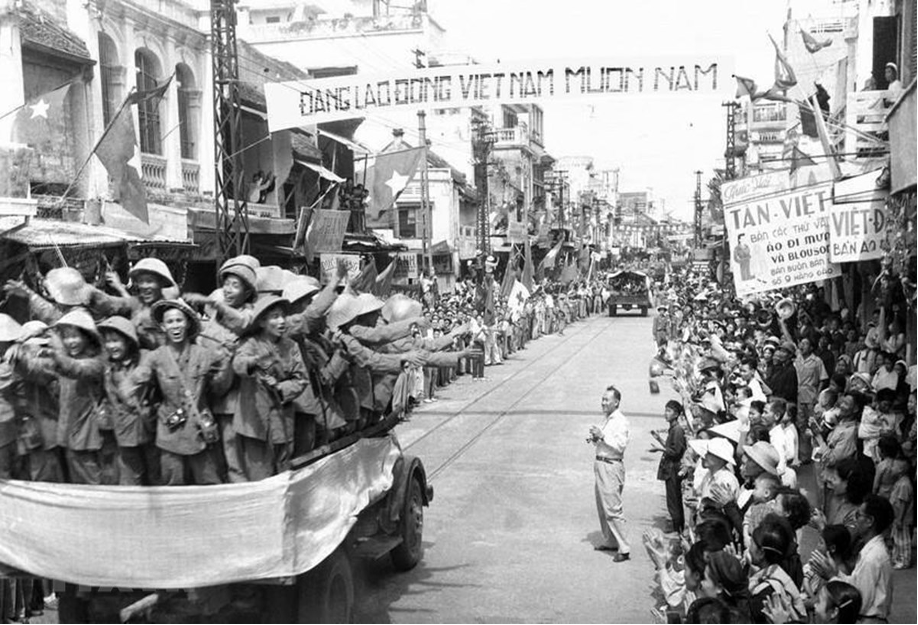

Kể từ "Chiếu dời đô" của Vua Lý Thái Tổ năm 1010 đến nay, Thăng Long
- Hà Nội đã trải qua và chứng kiến nhiều thăng trầm lịch sử.
Quân,
dân Hà Nội, thế hệ sau tiếp bước thế hệ trước kiên cường tranh
đấu,
bền bỉ lao động, sáng tạo nền văn hiến rực rỡ, lập nhiều chiến
công
hiển hách lưu danh muôn đời. Trong tiến trình lịch sử phát triển
Thủ
đô Hà Nội, ngày 10-10-1954 là một mốc son lịch sử, đánh dấu thất
bại
hoàn toàn của thực dân Pháp ở Việt Nam, mở ra thời kỳ phát triển
mới
của Thủ đô và đất nước. Cách mạng Tháng Tám năm 1945 thành công,
nhân dân Thủ đô Hà Nội và cả nước không có ước nguyện nào hơn là
được sống trong không khí hòa bình để xây dựng, phát triển. Nhưng
thực dân Pháp dưới sự ủng hộ của đế quốc Mỹ, đã dã tâm cướp nước
ta
một lần nữa, gây hấn ở Nam Bộ (23-9-1945) và phát động chiến
tranh
ra cả nước. Ngày 19-12-1946, hưởng ứng Lời kêu gọi của Chủ tịch
Hồ
Chí Minh "Thà hy sinh tất cả, chứ nhất định không chịu mất nước,
nhất định không chịu làm nô lệ", với tinh thần "Quyết tử để Tổ
quốc
quyết sinh", quân, dân Hà Nội đã cùng với nhân dân cả nước nhất
tề
đứng lên đánh giặc cứu nước.
Đọc thêm xin vui lòng chọn đường dẫn ở trên
* Một số danh hiệu thi đua của Thủ đô Hà Nội đạt được.
- Năm 1999, Thủ đô Hà Nội được Tổ chức Giáo dục - Khoa học và Văn
hóa của Liên hiệp quốc (UNESCO) vinh danh là "Thành phố vì hòa
bình".
- Năm 2000, Chủ tịch nước Cộng hòa Xã hội chủ nghĩa Việt Nam đã ký
bằng tặng thưởng thành phố Hà Nội danh hiệu "Thủ đô anh hùng" vì đã
có công lao
to lớn trong sự nghiệp xây dựng và bảo vệ tổ quốc".
- Năm 2010, nhân kỷ niệm 1000 năm Thăng Long - Hà Nội, Đảng bộ,
chính quyền và nhân dân Thủ đô vinh dự được Chủ tịch nước tặng
thưởng Huân
chương Sao vàng (lần thứ 3)./.
Quân đội Việt Nam tiếp quản bốt Hàng Trống (Trung tâm chỉ huy của cảnh sát Pháp ở Hà Nội).
Bộ đội ta trở về Thủ đô (ảnh tư liệu)